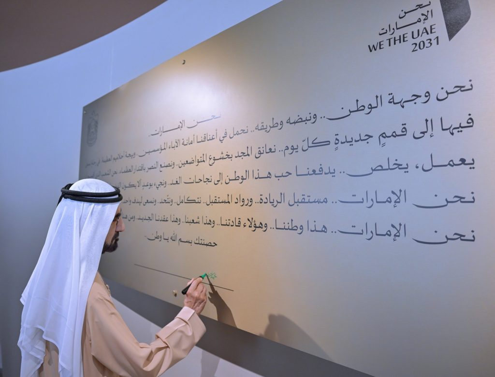
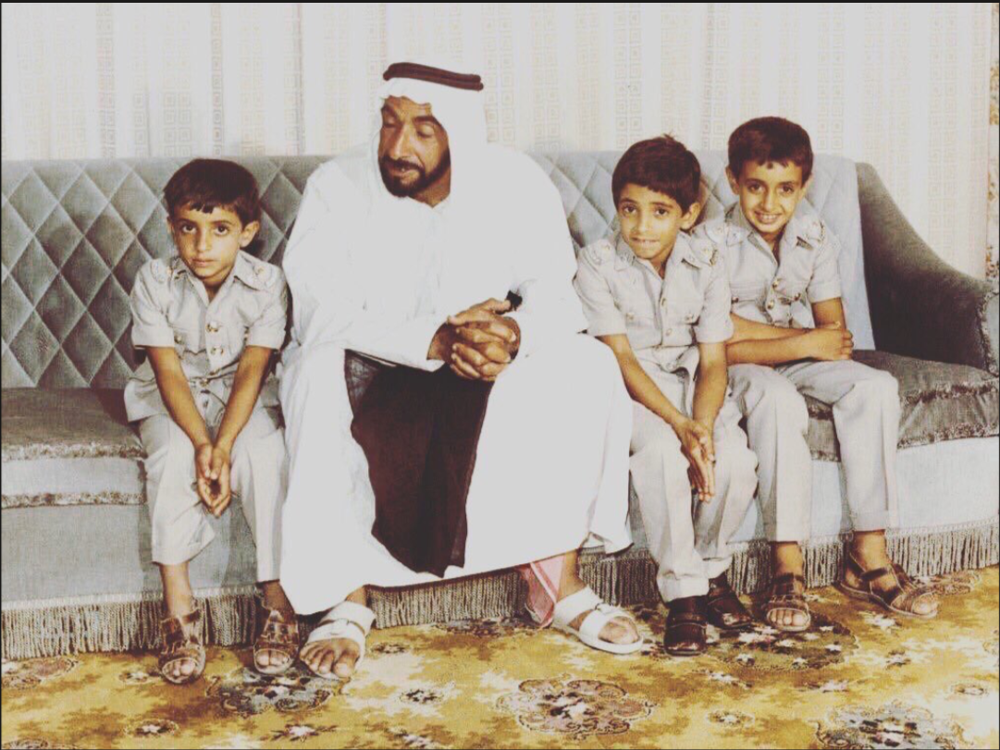
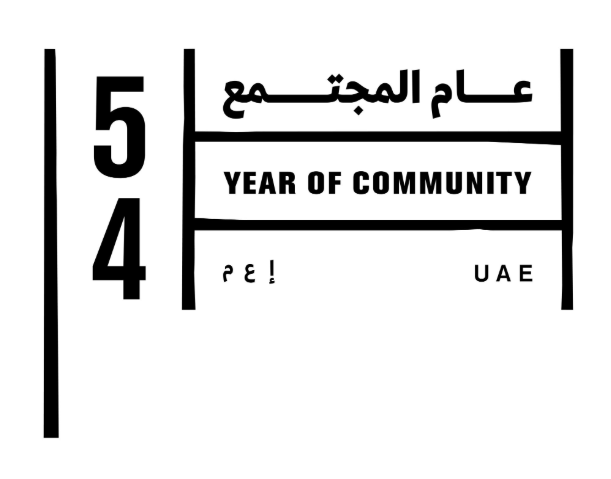
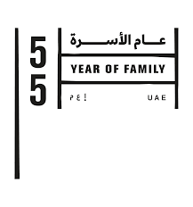

The Pipeline
مختبر النتائج والوثائق
تحويل التخطيط إلى مخرجات ملموسة مدعومة بالمصادر
من الفكرة إلى الأثر: رحلة الابتكار
اتبعنا منهجية التفكير التصميمي لضمان تقديم حلول حقيقية ومستدامة للتحديات الرقمية.
1
فهم الوضع
دراسة السيناريو الرابع وتحليل واقع استخدام التكنولوجيا في المدارس والشركات.
2
تحديد المشكلة
رصد التحدي: الاعتماد المفرط على التقنية الذي أضعف مهارات التفكير الإبداعي لدى الأفراد وكتابة بيان واضح للمشكلة.
3
تقديم الحلول
عصف ذهني للفريق واختيار فكرة منصة "عقول تصنع" كأداة لتعزيز الوعي الرقمي.
4
النمذجة (Prototyping)
برمجة واجهة الموقع التفاعلية وتصميم "تحدي العقول" والرسوم البيانية الإحصائية.
5
اختبار الحل وتحسينه
عرض الموقع على الزملاء، جمع الملاحظات، وتطوير المحتوى ليكون أكثر تأثيراً.
6
الحل النهائي
إطلاق منصة "عقول تصنع" المتكاملة وربطها بأهداف الاستدامة وجودة الحياة الرقمية.
نتائج استبيان الوعي الرقمي
تحليل تفصيلي لاستجابات طلاب الصف الثامن (13-14 عاماً) حول عاداتهم الرقمية.
مؤشرات السلوك الرقمي
التركيز الذاتي
التشتت الرقمي
100%75%50%25%0%
85%
اللاإرادي
70%
الوقت
92%
الرقمي
*
البيانات مستندة إلى إجابات الطلاب على مقياس من 0 إلى 10[cite: 5, 9].
أبرز الملاحظات:
- • أكثر من 90% يستخدمون التقنية كمهرب من تحديات المذاكرة[cite: 25, 29].
- • 8 من أصل 10 طلاب يتحققون من هواتفهم دون وجود تنبيهات فعليّة[cite: 3, 7].
- • صعوبة بالغة في العودة للتركيز العميق بعد الرد على الرسائل[cite: 12, 16].
بناءً على "اختبر وعيك الرقمي" - نموذج ميكروسوفت فورمز المرفق[cite: 22, 32].
حلول وعروض
المكتبة الرقمية المرئية
تصفحوا إنتاجاتنا المعرفية والمرئية
🧠
عقولٌ تصنع.. تقنياتٌ تتبع
مطوية تلخص جلستنا الحوارية حول إشكالية سرقة التكنولوجيا لبصمتنا الإبداعية.
👁️ عرض الملف🎤
مشاهدة المناظرة
فيديو يوثق مناظرة فكرية حية حول تأثير التقنية على وعي الأجيال القادمة.
🎬 الانتقال للفيديو
🔬
عقولٌ تصنع
نظام التحليل السيكومتري للأفكار
غرفة التحليل:
📝
بانتظار التحدي من المعلمة...
قيمنا الأصيلة
العقول تبدع.. والقيم تجمع
نستمد إلهامنا من قادتنا وتراثنا لبناء جيل يجمع بين ذكاء العقل ودفء القلب.

رؤية قائد
صناعة المستقبل لا تعتمد على التقنية وحدها، بل على العقول التي تديرها.

إرث الخمسين
الأسرة هي اللبنة الأولى لبناء مجتمع قوي ومتماسك.

جيل الغد
الاستثمار في الإنسان هو أعظم استثمار لمستقبل الإمارات.

روح المجتمع
نعمل معاً، عقولاً وقلوباً، لتعزيز الوعي الرقمي في مجتمعنا.
رؤية القيادة: من الوعي إلى الترابط
بعد رصد التحديات التي فرضتها النهضة التكنولوجية المتسارعة، وما تبعها من زيادة في ملامح التفكك الأسري وانشغال الأفراد بالعوالم الافتراضية، انطلقت القيادة الرشيدة من هذا المنطلق لتسمية هذا العام بـ "عام الأسرة". تهدف هذه الرؤية إلى استعادة دفء العلاقات الواقعية وتحصين المجتمع من العزلة الرقمية.
Slogan: "أسرة متماسكة.. مجتمع واعي"
المفارقة الرقمية في العلاقات الأسرية
تحليل الفجوة السلوكية بين الآباء والأبناء
الدراسة الأحدث عالمياً
المصدر: مركز بيو للأبحاث (Pew Research Center)
📵
تشتت انتباه الآباء
51% من المراهقين يشعرون بالإهمال الرقمي لأن والديهم ينشغلون بهواتفهم أثناء المحادثات.
🚧
الحواجز الصامتة
72% من الآباء يعانون من تشتت أبنائهم، مما يخلق فجوة تواصل صامتة داخل المنزل الواحد.
💡
مفارقة الإبداع
رغم التحديات، يؤمن 81% من الآباء بأن التكنولوجيا تفتح آفاقاً للتعلم والابتكار لأبنائهم.

"الأسرة هي الركيزة الأساسية في بناء المجتمع.."
— الشيخ محمد بن زايد

"قوة مجتمعنا في قوة أسرنا.."
— الشيخ محمد بن راشد
